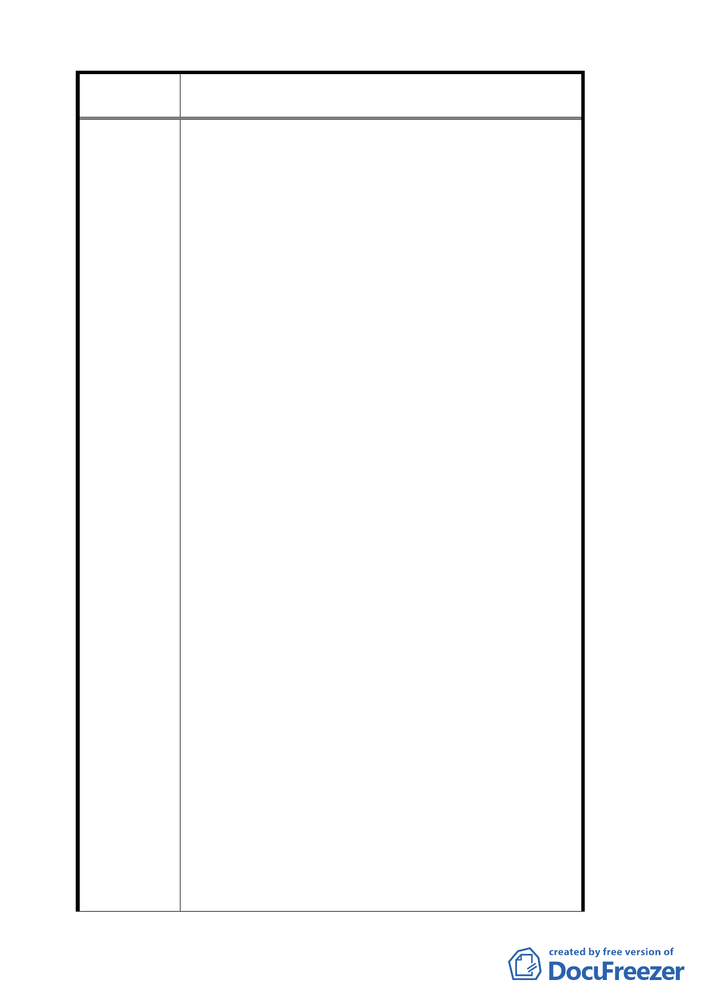

案 名 變更臺北市文山區指南里、老泉里部分保護區為休閒
產業特定專用區都市計畫案
四、貓空居民從過去的變成觀光茶園，到現在的茶房，
已變成貓空居民賴以維生的工具，目前茶房多沒
有營利事業登記證，是屬於違法營業，若兩年內
擇期改善，是否會演變成貓空居民的落日條款？
如果沒有達到 1650 平方公尺的商家，是否就沒辦
法繼續經營？政府想要把貓空發展成休閒重心取
向，但卻沒辦法滿足居民的期待時，不如無為而
治。有能力開發成 1650 平方公尺的商家就發展，
不能發展出如此大規模的小店也讓它繼續生存。
希望能依循這個模式為民眾想岀適合解套的方
式，讓店家們多些選擇，也可以使貓空成為未來
休閒產業特定區時，前往貓空的民眾能夠有更多
的選擇，能夠依民眾個人喜好，選擇各種不同風
情文化特色的茶館，對於貓空茶葉文化的推廣有
一定助益，過度強調 1650 平方公尺，反而容易使
貓空被財團壟斷。希望政府能以當地居民工作權
為考量，讓他們有一個安家立業的地方。不要因
為沒有辦法達成 1650 平方公尺的目標，不得已只
好將土地賣給財團，反而失去貓空原有特色，變
成木柵山上的麥當勞或星巴克。且若要談公平正
義，希望能有一定比例原則，不要將貓空問題放
在放大鏡下檢視。
五、希望能夠加強規劃，恢復貓空原本茶的文化。
六、希望能對貓空整體規劃，例如：交通管制的問題、
遊客停車的問題、道路寬度的問題、都是需要去
規劃的。
七、能夠有相關配套措施或是獎勵辦法，讓商家能夠
依規定行事，不要因為無法負擔土地，而讓貓空
淪為財團控制。
八、希望貓空的規劃能與農村發展配合保持原有風貌。
九、如果走向餐飲管理是否可行，例如餐飲教學或是
公共廚房等。
十、希望能將市有土地出租給部分未達標準的商家以
期達到較大的面積限制。
十一、因為貓空土地多為共同繼承，希望相關單位考量
目前已申請合法的比例有多少？申請者多為個
人繼承還是共同繼承？了解清楚能將本案作明
一四